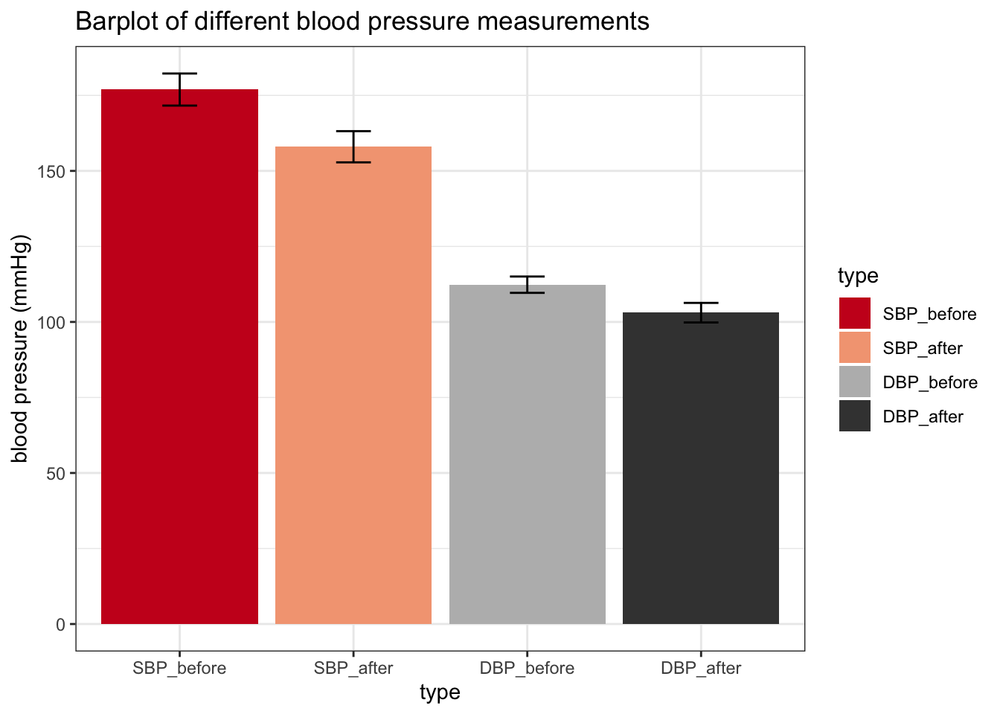
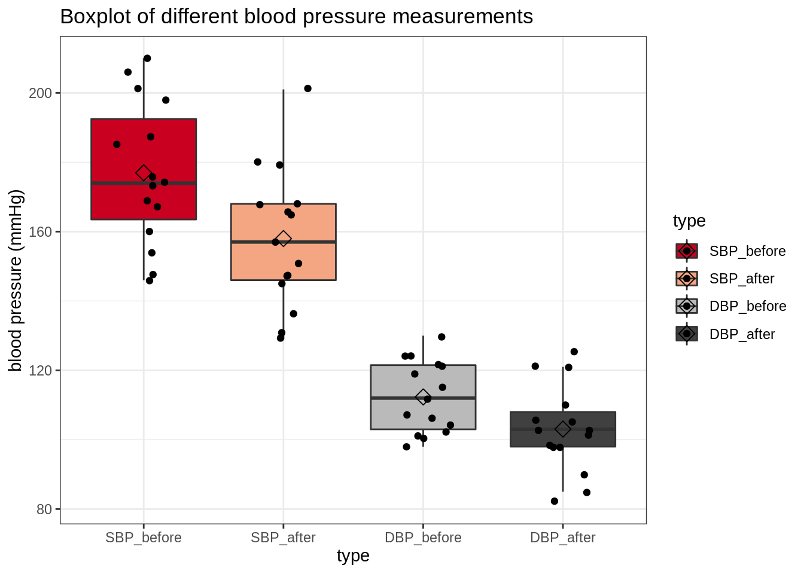
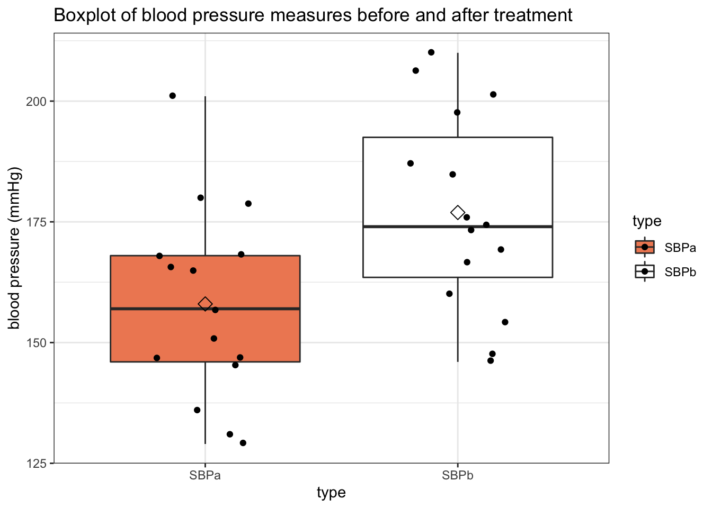
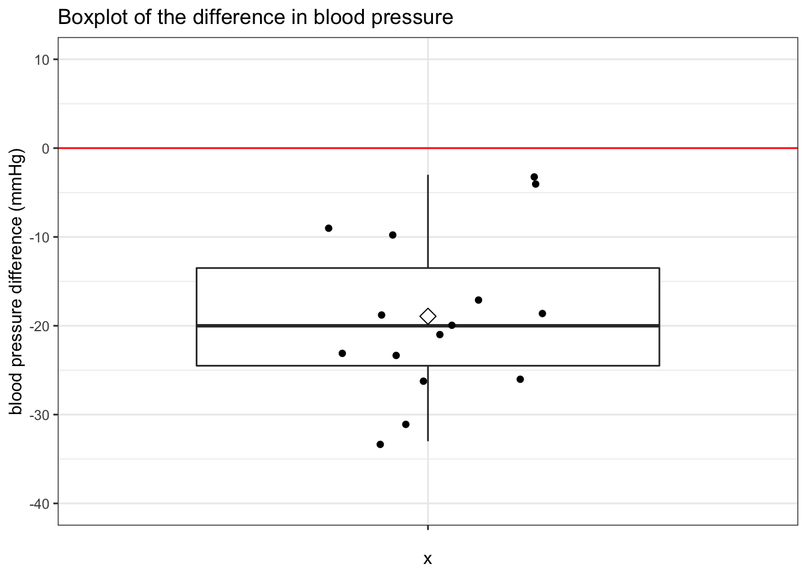

Import the data
library(tidyverse)
library(readr)
library(ggplot2)
captopril <- read_csv("https://raw.githubusercontent.com/statOmics/PSLS21/data/captopril.txt")
## Rows: 15 Columns: 5
## ── Column specification ──────────────────────────────────────────────
## Delimiter: ","
## dbl (5): id, SBPb, DBPb, SBPa, DBPa
##
## ℹ Use `spec()` to retrieve the full column specification for this data.
## ℹ Specify the column types or set `show_col_types = FALSE` to quiet this message.
Why is this dataset not tidy?
Data visualization
Let’s say we now first want to visualize the data. One possibility to easily visualize the four types of blood pressure values is by adopting the gather function from tidyverse. It will reshape the dataframe, such that we have have a single variable type, which points at one of the four blood pressure types, and bp, which points at the actual value for each type for each patient. We call this data format also a long format, while the original dataset is in wide format.
Side note: gather() is a rather outdated function from the tidyverse (though it still works perfectly fine!), the current recommended approach is to use pivot_longer()
## Pivot data from wide to long format
captopril_long <- captopril %>%
gather(type, bp, -id)
## Print the result
captopril_long
We transformed the data and stored it in a new object captopril_long for easy reuse later. To improve the visualizations below, we can also recode the type variable so it’s a bit more descriptive; SBPb correspond to “Systolic Blood Pressure before treatment”, SBPa to “SBP after treatment” and so on. We can use another package from the tidyverse named stringr to transform the character type variable.
captopril_long <- captopril_long %>%
mutate(
type = str_replace(type, "b", "_before"),
type = str_replace(type, "a", "_after")
)
## Print the result
captopril_long
Finally, R will by default visualize any character variables in alphabetic order. However, in this case, it makes more sense to put the before types first. We can do this by transforming the characgter variable type to a factor and use (yet) another tidyverse package (there are about 8 of them!) called forcats to make the before variables the reference level (i.e. the first in order).
captopril_long <- captopril_long %>%
mutate(
type = fct_relevel(
type,
c("SBP_before", "SBP_after", "DBP_before", "DBP_after")
))
captopril_long
Note that this doesn’t change anything to the order in which the values appear in the data (compare the output with that from before. The only thing that changed here is that we converted type to a factor, indicated by <fct> when printing the tibble object.
Barplot
Not all visualization types will be equally informative. Let us first make a barplot of the data. A barplot is a plot that you will commonly find in scientific publication The code for generating such a barplot is provided below:
captopril_long %>%
## Calculate summarry statistics for the "bp" variable for each "type"
group_by(type) %>%
summarize(
mean = mean(bp, na.rm = TRUE),
sd = sd(bp, na.rm = TRUE),
n = n()
) %>%
## Compute the standard errors for the means
mutate(se = sd / sqrt(n)) %>%
ggplot(aes(x = type, y = mean, fill = type)) +
scale_fill_brewer(palette = "RdGy") +
theme_bw() +
geom_bar(stat = "identity") +
geom_errorbar(aes(ymin = mean - se, ymax = mean + se), width = 0.2) +
ggtitle("Barplot of different blood pressure measurements") +
ylab("blood pressure (mmHg)")

A barplot, however, is not very informative. The height of the bars only provides us with information of the mean blood pressure. However, we don’t see the actual underlying values, so we for instance don’t have any information on the spread of the data. It is usually more informative to represent to underlying values as raw as possible. Note that it is possible to add the raw data on the barplot, but we still would not see any measures of the spread, such as the interquartile range.
Based on this critisism, can you think of a better visualization strategy for the captopril data?
Add your proposed visualization strategy here
Boxplot
It is usually more informative to represent to underlying values as raw as possible. Boxplots are ideal for this!
Note that it in theory it is possible to add the raw data on the barplot, but we still would not see any measures of the spread, such as the interquartile range.
captopril_long %>%
ggplot(aes(x = type, y = bp, fill = type)) +
scale_fill_brewer(palette = "RdGy") +
theme_bw() +
geom_boxplot(outlier.shape = NA) +
geom_jitter(width = 0.2) +
ggtitle("Boxplot of different blood pressure measurements") +
ylab("blood pressure (mmHg)") +
stat_summary(
fun = mean, geom = "point",
shape = 5, size = 3,
color = "black"
)

With the boxplot, we get a lot of useful information. We immediately see multiple features of the spread of the data, such as the median, the 25% and 75% quantiles and outliers. Since we only have 15 raw values (patients), we can easily add them to the plot without getting messy.
In terms of interpretation, we can see that the median systolic and diastolic blood pressure values are lower after treatment with captopril than before. If we want to have visual inference on the mean values (cfr. class on t-test), we can add them to the plot stat_summary function.
Scatterplot
An important feature of this dataset is that it contains paired data; for each patient, we have blood pressure values (systolic and diastolic) before and after treatment with captopril.
We can visualize this as follows;
captopril_long %>%
filter(type %in% c("SBP_after", "SBP_before")) %>%
ggplot(aes(x = id, y = bp, color = type)) +
geom_point(size = 2) +
scale_color_manual(values = c("blue", "red")) +
theme_bw()

Or, alternatively, by creating a line plot:
captopril_long %>%
filter(type %in% c("SBP_after", "SBP_before")) %>%
ggplot(aes(x = type, y = bp)) +
geom_line(aes(group = id)) +
theme_bw()

We see that for all patients, the systolic blood pressure is lower after captopril treatment than before.
Note that we could not see this from the boxplot directly;
captopril_long %>%
filter(type %in% c("SBP_after", "SBP_before")) %>%
ggplot(aes(x = type, y = bp, fill = type)) +
scale_fill_brewer(palette = "RdGy") +
theme_bw() +
geom_boxplot(outlier.shape = NA) +
geom_jitter(width = 0.2) +
ggtitle("Boxplot of blood pressure measurements before and after treatment") +
ylab("blood pressure (mmHg)") +
stat_summary(fun = mean, geom = "point", shape = 5, size = 3, color = "black", fill = "black")

A typical next step is to perform a test to find out whether the mean systolic blood pressure value after captopril treatment is significantly different from the mean systolic blood pressure value before treatment.
Analagously, we may subtract the after measurement from the before measurement, and test if the difference between the two sets of values is significantly different from zero.
captopril %>%
mutate(bp_diff = SBPa - SBPb) %>%
select(bp_diff) %>%
ggplot(aes(x = "", y = bp_diff)) +
geom_boxplot(outlier.shape = NA) +
geom_jitter(width = 0.2) +
ggtitle("Boxplot of the difference in blood pressure") +
ylab("blood pressure difference (mmHg)") +
stat_summary(
fun = mean, geom = "point",
shape = 5, size = 3, color = "black") +
theme_bw() +
ylim(-40, 10) +
geom_hline(yintercept = 0, color = "red") ## adds horizontal line to plot

The mean difference is lower than zero. It seems that on average the captopril treatment has lowered the blood pressure by about 20 mmHg. Tomorrow, we will show how we can test if this reduction is significantly different from 0 mmHg.
LS0tCnRpdGxlOiAiRXhlcmNpc2UgNC4zOiBFeHBsb3JpbmcgdGhlIGNhcHRvcHJpbCBkYXRhc2V0IgphdXRob3I6ICJMaWV2ZW4gQ2xlbWVudCwgSmVyb2VuIEdpbGlzIGFuZCBNaWxhbiBNYWxmYWl0IgpkYXRlOiAic3RhdE9taWNzLCBHaGVudCBVbml2ZXJzaXR5IChodHRwczovL3N0YXRvbWljcy5naXRodWIuaW8pIgotLS0KCiMgVGhlIGNhcHRvcHJpbCBkYXRhc2V0CgpUaGUgYGNhcHRvcHJpbCBkYXRhc2V0YCBob2xkcyBpbmZvcm1hdGlvbiBvbiBhIHNtYWxsIGV4cGVyaW1lbnQgd2l0aAoxNSBwYXRpZW50cyB0aGF0IGhhdmUgaW5jcmVhc2VkIGJsb29kIHByZXNzdXJlIHZhbHVlcy4KTW9yZSBzcGVjaWZpY2FsbHksIGZvciBlYWNoIHBhdGllbnQgd2Ugd2lsbCBoYXZlIGZvdXIgdmFsdWVzOwpvbmUgdmFsdWUgZm9yIHN5c3RvbGljIGJsb29kIHByZXNzdXJlIGFuZCBvbmUgZm9yIGRpYXN0b2x5aWMsCmJvdGggYmVmb3JlIGFuZCBhZnRlciB0cmVhdGluZyB0aGUgcGF0aWVudCB3aXRoIGEgZHJ1ZyBuYW1lZCBjYXB0b3ByaWwuCgojIEltcG9ydCB0aGUgZGF0YQoKYGBge3IsIG1lc3NhZ2U9RkFMU0UsIHdhcm5pbmc9RkFMU0V9CmxpYnJhcnkodGlkeXZlcnNlKQpsaWJyYXJ5KHJlYWRyKQpsaWJyYXJ5KGdncGxvdDIpCmBgYAoKYGBge3J9CmNhcHRvcHJpbCA8LSByZWFkX2NzdigiaHR0cHM6Ly9yYXcuZ2l0aHVidXNlcmNvbnRlbnQuY29tL3N0YXRPbWljcy9QU0xTMjEvZGF0YS9jYXB0b3ByaWwudHh0IikKYGBgCgpgYGB7cn0KaGVhZChjYXB0b3ByaWwpCmBgYAoKKipXaHkgaXMgdGhpcyBkYXRhc2V0IG5vdCB0aWR5PyoqCgojIERhdGEgdmlzdWFsaXphdGlvbgoKTGV0J3Mgc2F5IHdlIG5vdyBmaXJzdCB3YW50IHRvIHZpc3VhbGl6ZSB0aGUgZGF0YS4KT25lIHBvc3NpYmlsaXR5IHRvIGVhc2lseSB2aXN1YWxpemUgdGhlIGZvdXIgdHlwZXMKb2YgYmxvb2QgcHJlc3N1cmUgdmFsdWVzIGlzIGJ5IGFkb3B0aW5nIHRoZSBgZ2F0aGVyYApmdW5jdGlvbiBmcm9tIHRpZHl2ZXJzZS4gSXQgd2lsbCByZXNoYXBlIHRoZSBkYXRhZnJhbWUsCnN1Y2ggdGhhdCB3ZSBoYXZlIGhhdmUgYSBzaW5nbGUgdmFyaWFibGUgYHR5cGVgLCB3aGljaApwb2ludHMgYXQgb25lIG9mIHRoZSBmb3VyIGJsb29kIHByZXNzdXJlIHR5cGVzLCBhbmQgYGJwYCwKd2hpY2ggcG9pbnRzIGF0IHRoZSBhY3R1YWwgdmFsdWUgZm9yIGVhY2ggdHlwZQpmb3IgZWFjaCBwYXRpZW50LiBXZSBjYWxsIHRoaXMgZGF0YSBmb3JtYXQgYWxzbyBhICpsb25nKgpmb3JtYXQsIHdoaWxlIHRoZSBvcmlnaW5hbCBkYXRhc2V0IGlzIGluICp3aWRlKiBmb3JtYXQuCgoqKlNpZGUgbm90ZSoqOiBgZ2F0aGVyKClgIGlzIGEgcmF0aGVyIG91dGRhdGVkIGZ1bmN0aW9uIGZyb20gdGhlIHRpZHl2ZXJzZSAodGhvdWdoIGl0IHN0aWxsIHdvcmtzCnBlcmZlY3RseSBmaW5lISksIHRoZSBjdXJyZW50IHJlY29tbWVuZGVkIGFwcHJvYWNoIGlzIHRvIHVzZQpbYHBpdm90X2xvbmdlcigpYF0oaHR0cHM6Ly90aWR5ci50aWR5dmVyc2Uub3JnL3JlZmVyZW5jZS9waXZvdF9sb25nZXIuaHRtbCkKCmBgYHtyfQojIyBQaXZvdCBkYXRhIGZyb20gd2lkZSB0byBsb25nIGZvcm1hdApjYXB0b3ByaWxfbG9uZyA8LSBjYXB0b3ByaWwgJT4lCiAgZ2F0aGVyKHR5cGUsIGJwLCAtaWQpCgojIyBQcmludCB0aGUgcmVzdWx0CmNhcHRvcHJpbF9sb25nCmBgYAoKV2UgdHJhbnNmb3JtZWQgdGhlIGRhdGEgYW5kIHN0b3JlZCBpdCBpbiBhIG5ldyBvYmplY3QgYGNhcHRvcHJpbF9sb25nYCBmb3IgZWFzeSByZXVzZSBsYXRlci4gIFRvCmltcHJvdmUgdGhlIHZpc3VhbGl6YXRpb25zIGJlbG93LCB3ZSBjYW4gYWxzbyByZWNvZGUgdGhlIGB0eXBlYCB2YXJpYWJsZSBzbyBpdCdzIGEgYml0IG1vcmUKZGVzY3JpcHRpdmU7IGBTQlBiYCBjb3JyZXNwb25kIHRvICJTeXN0b2xpYyBCbG9vZCBQcmVzc3VyZSBiZWZvcmUgdHJlYXRtZW50IiwgYFNCUGFgIHRvICJTQlAgYWZ0ZXIKdHJlYXRtZW50IiBhbmQgc28gb24uIFdlIGNhbiB1c2UgYW5vdGhlciBwYWNrYWdlIGZyb20gdGhlIHRpZHl2ZXJzZSBuYW1lZApbKnN0cmluZ3IqXShodHRwczovL3N0cmluZ3IudGlkeXZlcnNlLm9yZykgdG8gdHJhbnNmb3JtIHRoZSBjaGFyYWN0ZXIgYHR5cGVgIHZhcmlhYmxlLgoKYGBge3J9CmNhcHRvcHJpbF9sb25nIDwtIGNhcHRvcHJpbF9sb25nICU+JQogIG11dGF0ZSgKICAgIHR5cGUgPSBzdHJfcmVwbGFjZSh0eXBlLCAiYiIsICJfYmVmb3JlIiksCiAgICB0eXBlID0gc3RyX3JlcGxhY2UodHlwZSwgImEiLCAiX2FmdGVyIikKICApCgojIyBQcmludCB0aGUgcmVzdWx0CmNhcHRvcHJpbF9sb25nCmBgYAoKRmluYWxseSwgUiB3aWxsIGJ5IGRlZmF1bHQgdmlzdWFsaXplIGFueSBjaGFyYWN0ZXIgdmFyaWFibGVzIGluIGFscGhhYmV0aWMgb3JkZXIuIEhvd2V2ZXIsIGluIHRoaXMgY2FzZSwgaXQgbWFrZXMgbW9yZSBzZW5zZSB0byBwdXQgdGhlIGBiZWZvcmVgIHR5cGVzIGZpcnN0LiBXZSBjYW4gZG8gdGhpcyBieSB0cmFuc2Zvcm1pbmcgdGhlIGNoYXJhY2d0ZXIgdmFyaWFibGUgYHR5cGVgIHRvIGEgZmFjdG9yIGFuZCB1c2UgKHlldCkgYW5vdGhlciB0aWR5dmVyc2UgcGFja2FnZSAodGhlcmUgYXJlIGFib3V0IDggb2YgdGhlbSEpIGNhbGxlZCBbKmZvcmNhdHMqXShodHRwczovL2ZvcmNhdHMudGlkeXZlcnNlLm9yZy8pIHRvIG1ha2UgdGhlIGBiZWZvcmVgIHZhcmlhYmxlcyB0aGUgcmVmZXJlbmNlIGxldmVsIChpLmUuIHRoZSBmaXJzdCBpbiBvcmRlcikuCgpgYGB7cn0KY2FwdG9wcmlsX2xvbmcgPC0gY2FwdG9wcmlsX2xvbmcgJT4lCiAgbXV0YXRlKAogICAgdHlwZSA9IGZjdF9yZWxldmVsKAogICAgICB0eXBlLAogICAgICBjKCJTQlBfYmVmb3JlIiwgIlNCUF9hZnRlciIsICJEQlBfYmVmb3JlIiwgIkRCUF9hZnRlciIpCiAgKSkKY2FwdG9wcmlsX2xvbmcKYGBgCgoqTm90ZSB0aGF0IHRoaXMgZG9lc24ndCBjaGFuZ2UgYW55dGhpbmcgdG8gdGhlIG9yZGVyIGluIHdoaWNoIHRoZSB2YWx1ZXMgYXBwZWFyIGluIHRoZSBkYXRhCihjb21wYXJlIHRoZSBvdXRwdXQgd2l0aCB0aGF0IGZyb20gYmVmb3JlLiBUaGUgb25seSB0aGluZyB0aGF0IGNoYW5nZWQgaGVyZSBpcyB0aGF0IHdlIGNvbnZlcnRlZApgdHlwZWAgdG8gYSBfX2ZhY3Rvcl9fLCBpbmRpY2F0ZWQgYnkgYDxmY3Q+YCB3aGVuIHByaW50aW5nIHRoZSBgdGliYmxlYCBvYmplY3QuKgoKIyMgQmFycGxvdAoKTm90IGFsbCB2aXN1YWxpemF0aW9uIHR5cGVzIHdpbGwgYmUgZXF1YWxseSBpbmZvcm1hdGl2ZS4KTGV0IHVzIGZpcnN0IG1ha2UgYSBiYXJwbG90IG9mIHRoZSBkYXRhLiBBIGJhcnBsb3QgaXMgYSBwbG90IHRoYXQgeW91IHdpbGwKY29tbW9ubHkgZmluZCBpbiBzY2llbnRpZmljIHB1YmxpY2F0aW9uIFRoZSBjb2RlIGZvciBnZW5lcmF0aW5nIHN1Y2ggYSBiYXJwbG90CmlzIHByb3ZpZGVkIGJlbG93OgoKYGBge3J9CmNhcHRvcHJpbF9sb25nICU+JQogICMjIENhbGN1bGF0ZSBzdW1tYXJyeSBzdGF0aXN0aWNzIGZvciB0aGUgImJwIiB2YXJpYWJsZSBmb3IgZWFjaCAidHlwZSIKICBncm91cF9ieSh0eXBlKSAlPiUKICBzdW1tYXJpemUoCiAgICBtZWFuID0gbWVhbihicCwgbmEucm0gPSBUUlVFKSwKICAgIHNkID0gc2QoYnAsIG5hLnJtID0gVFJVRSksCiAgICBuID0gbigpCiAgKSAlPiUKICAjIyBDb21wdXRlIHRoZSBzdGFuZGFyZCBlcnJvcnMgZm9yIHRoZSBtZWFucwogIG11dGF0ZShzZSA9IHNkIC8gc3FydChuKSkgJT4lCiAgZ2dwbG90KGFlcyh4ID0gdHlwZSwgeSA9IG1lYW4sIGZpbGwgPSB0eXBlKSkgKwogIHNjYWxlX2ZpbGxfYnJld2VyKHBhbGV0dGUgPSAiUmRHeSIpICsKICB0aGVtZV9idygpICsKICBnZW9tX2JhcihzdGF0ID0gImlkZW50aXR5IikgKwogIGdlb21fZXJyb3JiYXIoYWVzKHltaW4gPSBtZWFuIC0gc2UsIHltYXggPSBtZWFuICsgc2UpLCB3aWR0aCA9IDAuMikgKwogIGdndGl0bGUoIkJhcnBsb3Qgb2YgZGlmZmVyZW50IGJsb29kIHByZXNzdXJlIG1lYXN1cmVtZW50cyIpICsKICB5bGFiKCJibG9vZCBwcmVzc3VyZSAobW1IZykiKQpgYGAKCkEgYmFycGxvdCwgaG93ZXZlciwgaXMgbm90IHZlcnkgaW5mb3JtYXRpdmUuIFRoZSBoZWlnaHQgb2YgdGhlCmJhcnMgb25seSBwcm92aWRlcyB1cyB3aXRoIGluZm9ybWF0aW9uIG9mIHRoZSBtZWFuIGJsb29kIHByZXNzdXJlLgpIb3dldmVyLCB3ZSBkb24ndCBzZWUgdGhlIGFjdHVhbCB1bmRlcmx5aW5nIHZhbHVlcywgc28gd2UgZm9yCmluc3RhbmNlIGRvbid0IGhhdmUgYW55IGluZm9ybWF0aW9uIG9uIHRoZSBzcHJlYWQgb2YgdGhlIGRhdGEuCkl0IGlzIHVzdWFsbHkgbW9yZSBpbmZvcm1hdGl2ZSB0byByZXByZXNlbnQgdG8gdW5kZXJseWluZwp2YWx1ZXMgYXMgX3Jhd18gYXMgcG9zc2libGUuIE5vdGUgdGhhdCBpdCBpcyBwb3NzaWJsZSB0byBhZGQgdGhlCnJhdyBkYXRhIG9uIHRoZSBiYXJwbG90LCBidXQgd2Ugc3RpbGwgd291bGQgbm90IHNlZSBhbnkgbWVhc3VyZXMKb2YgdGhlIHNwcmVhZCwgc3VjaCBhcyB0aGUgaW50ZXJxdWFydGlsZSByYW5nZS4KCioqQmFzZWQgb24gdGhpcyBjcml0aXNpc20sIGNhbiB5b3UgdGhpbmsgb2YgYSBiZXR0ZXIqKgoqKnZpc3VhbGl6YXRpb24gc3RyYXRlZ3kgZm9yIHRoZSBjYXB0b3ByaWwgZGF0YT8qKgoKKipBZGQgeW91ciBwcm9wb3NlZCB2aXN1YWxpemF0aW9uIHN0cmF0ZWd5IGhlcmUqKgoKIyMgQm94cGxvdAoKSXQgaXMgdXN1YWxseSBtb3JlIGluZm9ybWF0aXZlIHRvIHJlcHJlc2VudCB0byB1bmRlcmx5aW5nCnZhbHVlcyBhcyBfcmF3XyBhcyBwb3NzaWJsZS4gQm94cGxvdHMgYXJlIGlkZWFsIGZvciB0aGlzIQoKTm90ZSB0aGF0IGl0IGluIHRoZW9yeSBpdCBpcyBwb3NzaWJsZSB0byBhZGQgdGhlIHJhdyBkYXRhIG9uCnRoZSBiYXJwbG90LCBidXQgd2Ugc3RpbGwgd291bGQgbm90IHNlZSBhbnkgbWVhc3VyZXMgb2YgdGhlCnNwcmVhZCwgc3VjaCBhcyB0aGUgaW50ZXJxdWFydGlsZSByYW5nZS4KCmBgYHtyfQpjYXB0b3ByaWxfbG9uZyAlPiUKICBnZ3Bsb3QoYWVzKHggPSB0eXBlLCB5ID0gYnAsIGZpbGwgPSB0eXBlKSkgKwogIHNjYWxlX2ZpbGxfYnJld2VyKHBhbGV0dGUgPSAiUmRHeSIpICsKICB0aGVtZV9idygpICsKICBnZW9tX2JveHBsb3Qob3V0bGllci5zaGFwZSA9IE5BKSArCiAgZ2VvbV9qaXR0ZXIod2lkdGggPSAwLjIpICsKICBnZ3RpdGxlKCJCb3hwbG90IG9mIGRpZmZlcmVudCBibG9vZCBwcmVzc3VyZSBtZWFzdXJlbWVudHMiKSArCiAgeWxhYigiYmxvb2QgcHJlc3N1cmUgKG1tSGcpIikgKwogIHN0YXRfc3VtbWFyeSgKICAgIGZ1biA9IG1lYW4sIGdlb20gPSAicG9pbnQiLAogICAgc2hhcGUgPSA1LCBzaXplID0gMywKICAgIGNvbG9yID0gImJsYWNrIgogICkKYGBgCgpXaXRoIHRoZSBib3hwbG90LCB3ZSBnZXQgYSBsb3Qgb2YgdXNlZnVsIGluZm9ybWF0aW9uLgpXZSBpbW1lZGlhdGVseSBzZWUgbXVsdGlwbGUgZmVhdHVyZXMgb2YgdGhlIHNwcmVhZCBvZgp0aGUgZGF0YSwgc3VjaCBhcyB0aGUgbWVkaWFuLCB0aGUgMjUlIGFuZCA3NSUgcXVhbnRpbGVzCmFuZCBvdXRsaWVycy4gU2luY2Ugd2Ugb25seSBoYXZlIDE1IHJhdyB2YWx1ZXMgKHBhdGllbnRzKSwKd2UgY2FuIGVhc2lseSBhZGQgdGhlbSB0byB0aGUgcGxvdCB3aXRob3V0IGdldHRpbmcgbWVzc3kuCgpJbiB0ZXJtcyBvZiBpbnRlcnByZXRhdGlvbiwgd2UgY2FuIHNlZSB0aGF0IHRoZSBtZWRpYW4Kc3lzdG9saWMgYW5kIGRpYXN0b2xpYyBibG9vZCBwcmVzc3VyZSB2YWx1ZXMgYXJlIGxvd2VyCmFmdGVyIHRyZWF0bWVudCB3aXRoIGNhcHRvcHJpbCB0aGFuIGJlZm9yZS4gSWYgd2Ugd2FudCB0bwpoYXZlIHZpc3VhbCBpbmZlcmVuY2Ugb24gdGhlIG1lYW4gdmFsdWVzIChjZnIuIGNsYXNzIG9uIHQtdGVzdCksCndlIGNhbiBhZGQgdGhlbSB0byB0aGUgcGxvdCBgc3RhdF9zdW1tYXJ5YCBmdW5jdGlvbi4KCiMjIFNjYXR0ZXJwbG90CgpBbiBpbXBvcnRhbnQgZmVhdHVyZSBvZiB0aGlzIGRhdGFzZXQgaXMgdGhhdCBpdCBjb250YWlucwpwYWlyZWQgZGF0YTsgZm9yIGVhY2ggcGF0aWVudCwgd2UgaGF2ZSBibG9vZCBwcmVzc3VyZSB2YWx1ZXMKKHN5c3RvbGljIGFuZCBkaWFzdG9saWMpIGJlZm9yZSBhbmQgYWZ0ZXIgdHJlYXRtZW50IHdpdGgKY2FwdG9wcmlsLgoKV2UgY2FuIHZpc3VhbGl6ZSB0aGlzIGFzIGZvbGxvd3M7CgpgYGB7cn0KY2FwdG9wcmlsX2xvbmcgJT4lCiAgZmlsdGVyKHR5cGUgJWluJSBjKCJTQlBfYWZ0ZXIiLCAiU0JQX2JlZm9yZSIpKSAlPiUKICBnZ3Bsb3QoYWVzKHggPSBpZCwgeSA9IGJwLCBjb2xvciA9IHR5cGUpKSArCiAgZ2VvbV9wb2ludChzaXplID0gMikgKwogIHNjYWxlX2NvbG9yX21hbnVhbCh2YWx1ZXMgPSBjKCJibHVlIiwgInJlZCIpKSArCiAgdGhlbWVfYncoKQpgYGAKCk9yLCBhbHRlcm5hdGl2ZWx5LCBieSBjcmVhdGluZyBhIGBsaW5lIHBsb3RgOgoKYGBge3J9CmNhcHRvcHJpbF9sb25nICU+JQogIGZpbHRlcih0eXBlICVpbiUgYygiU0JQX2FmdGVyIiwgIlNCUF9iZWZvcmUiKSkgJT4lCiAgZ2dwbG90KGFlcyh4ID0gdHlwZSwgeSA9IGJwKSkgKwogIGdlb21fbGluZShhZXMoZ3JvdXAgPSBpZCkpICsKICB0aGVtZV9idygpCmBgYAoKV2Ugc2VlIHRoYXQgZm9yIGFsbCBwYXRpZW50cywgdGhlIHN5c3RvbGljIGJsb29kCnByZXNzdXJlIGlzIGxvd2VyIGFmdGVyIGNhcHRvcHJpbCB0cmVhdG1lbnQgdGhhbiBiZWZvcmUuCgpOb3RlIHRoYXQgd2UgY291bGQgbm90IHNlZSB0aGlzIGZyb20gdGhlIGJveHBsb3QgZGlyZWN0bHk7CgpgYGB7cn0KY2FwdG9wcmlsX2xvbmcgJT4lCiAgZmlsdGVyKHR5cGUgJWluJSBjKCJTQlBfYWZ0ZXIiLCAiU0JQX2JlZm9yZSIpKSAlPiUKICBnZ3Bsb3QoYWVzKHggPSB0eXBlLCB5ID0gYnAsIGZpbGwgPSB0eXBlKSkgKwogIHNjYWxlX2ZpbGxfYnJld2VyKHBhbGV0dGUgPSAiUmRHeSIpICsKICB0aGVtZV9idygpICsKICBnZW9tX2JveHBsb3Qob3V0bGllci5zaGFwZSA9IE5BKSArCiAgZ2VvbV9qaXR0ZXIod2lkdGggPSAwLjIpICsKICBnZ3RpdGxlKCJCb3hwbG90IG9mIGJsb29kIHByZXNzdXJlIG1lYXN1cmVtZW50cyBiZWZvcmUgYW5kIGFmdGVyIHRyZWF0bWVudCIpICsKICB5bGFiKCJibG9vZCBwcmVzc3VyZSAobW1IZykiKSArCiAgc3RhdF9zdW1tYXJ5KGZ1biA9IG1lYW4sIGdlb20gPSAicG9pbnQiLCBzaGFwZSA9IDUsIHNpemUgPSAzLCBjb2xvciA9ICJibGFjayIsIGZpbGwgPSAiYmxhY2siKQpgYGAKCkEgdHlwaWNhbCBuZXh0IHN0ZXAgaXMgdG8gcGVyZm9ybSBhIHRlc3QgdG8gZmluZCBvdXQKd2hldGhlciB0aGUgbWVhbiBzeXN0b2xpYyBibG9vZCBwcmVzc3VyZSB2YWx1ZSBhZnRlcgpjYXB0b3ByaWwgdHJlYXRtZW50IGlzIF9zaWduaWZpY2FudGx5XyBkaWZmZXJlbnQgZnJvbQp0aGUgbWVhbiBzeXN0b2xpYyBibG9vZCBwcmVzc3VyZSB2YWx1ZSBiZWZvcmUgdHJlYXRtZW50LgoKQW5hbGFnb3VzbHksIHdlIG1heSBzdWJ0cmFjdCB0aGUgYGFmdGVyYCBtZWFzdXJlbWVudCBmcm9tIHRoZQpgYmVmb3JlYCBtZWFzdXJlbWVudCwgYW5kIHRlc3QgaWYgdGhlIGRpZmZlcmVuY2UgYmV0d2VlbiB0aGUKdHdvIHNldHMgb2YgdmFsdWVzIGlzIHNpZ25pZmljYW50bHkgZGlmZmVyZW50IGZyb20gemVyby4KCmBgYHtyfQpjYXB0b3ByaWwgJT4lCiAgbXV0YXRlKGJwX2RpZmYgPSBTQlBhIC0gU0JQYikgJT4lCiAgc2VsZWN0KGJwX2RpZmYpICU+JQogIGdncGxvdChhZXMoeCA9ICIiLCB5ID0gYnBfZGlmZikpICsKICBnZW9tX2JveHBsb3Qob3V0bGllci5zaGFwZSA9IE5BKSArCiAgZ2VvbV9qaXR0ZXIod2lkdGggPSAwLjIpICsKICBnZ3RpdGxlKCJCb3hwbG90IG9mIHRoZSBkaWZmZXJlbmNlIGluIGJsb29kIHByZXNzdXJlIikgKwogIHlsYWIoImJsb29kIHByZXNzdXJlIGRpZmZlcmVuY2UgKG1tSGcpIikgKwogIHN0YXRfc3VtbWFyeSgKICAgIGZ1biA9IG1lYW4sIGdlb20gPSAicG9pbnQiLAogICAgc2hhcGUgPSA1LCBzaXplID0gMywgY29sb3IgPSAiYmxhY2siKSArCiAgdGhlbWVfYncoKSArCiAgeWxpbSgtNDAsIDEwKSArCiAgZ2VvbV9obGluZSh5aW50ZXJjZXB0ID0gMCwgY29sb3IgPSAicmVkIikgIyMgYWRkcyBob3Jpem9udGFsIGxpbmUgdG8gcGxvdApgYGAKClRoZSBtZWFuIGRpZmZlcmVuY2UgaXMgbG93ZXIgdGhhbiB6ZXJvLiBJdCBzZWVtcyB0aGF0IG9uIGF2ZXJhZ2UgdGhlIGNhcHRvcHJpbAp0cmVhdG1lbnQgaGFzIGxvd2VyZWQgdGhlIGJsb29kIHByZXNzdXJlIGJ5IGFib3V0IDIwIG1tSGcuIFRvbW9ycm93LCB3ZSB3aWxsCnNob3cgaG93IHdlIGNhbiB0ZXN0IGlmIHRoaXMgcmVkdWN0aW9uIGlzIHNpZ25pZmljYW50bHkgZGlmZmVyZW50IGZyb20gMCBtbUhnLgo=